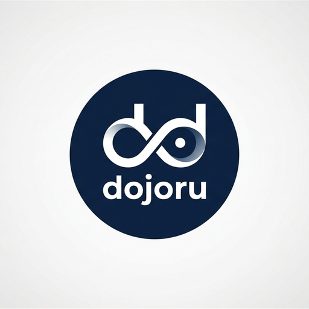
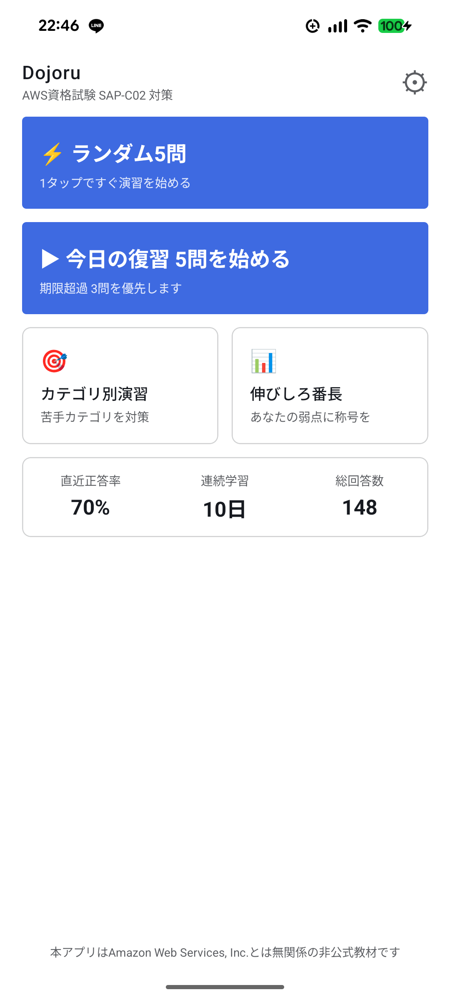
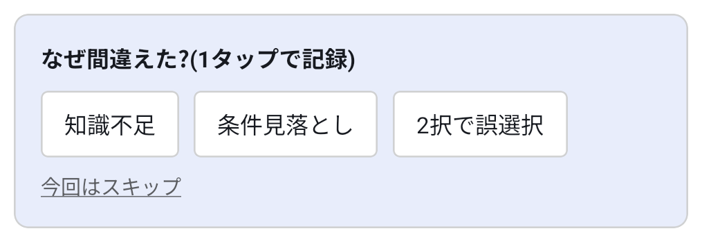
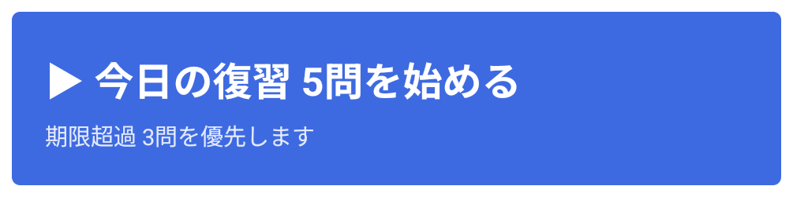
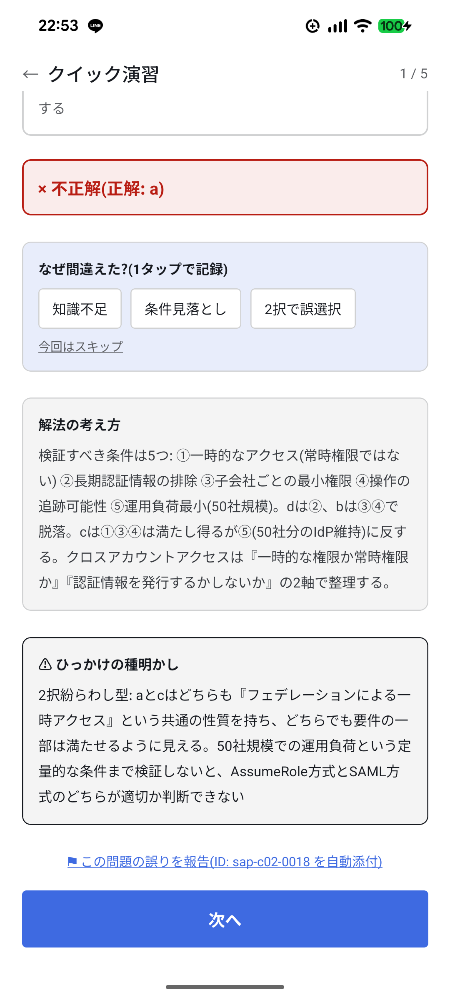
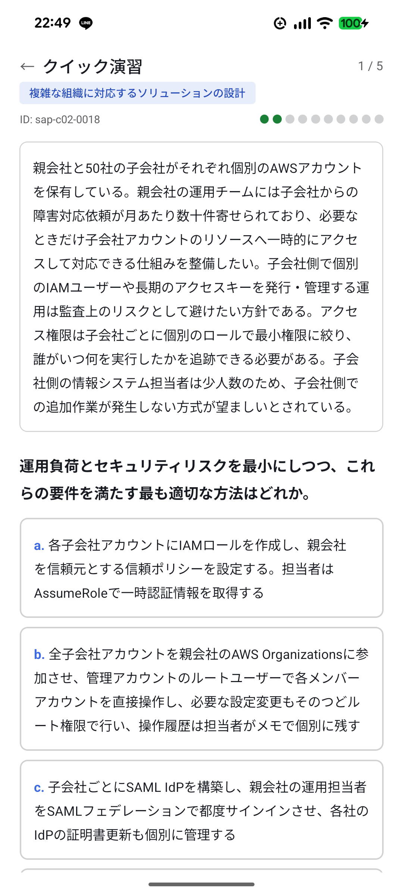
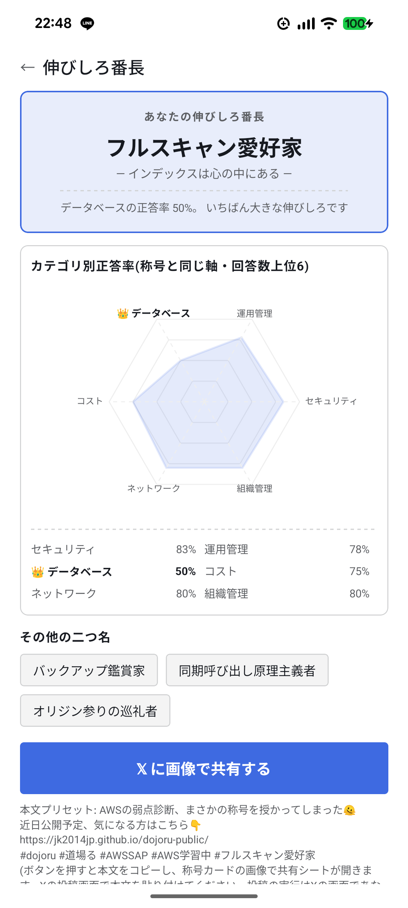
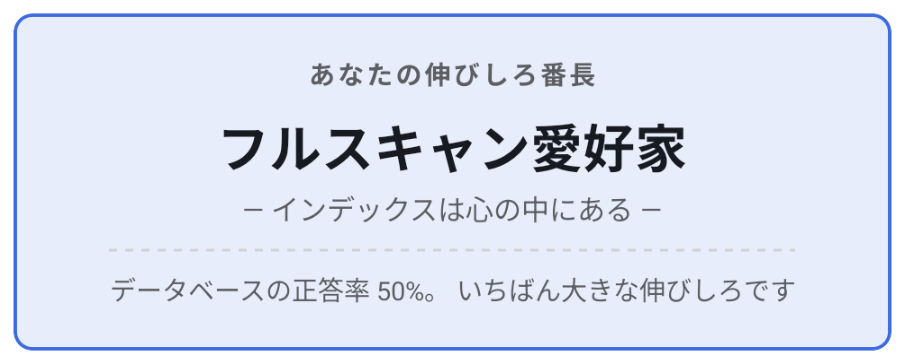

AWS資格試験(SAP-C02)対策・非公式

Dojoru(道場る)
すきま時間で、解いて、間違えた理由を1タップで記録して、弱点だけを効率よく復習する。
それだけに絞ったシンプルな問題演習アプリです。
- Android
- オフラインで演習できる
- 学習データは端末内に保存
- 全選択肢に解説

Dojoruとは
Dojoruは、SAP-C02の学習を「解く→間違えた理由を記録する→弱点を復習する」というサイクルに絞り込んだ、 Android向けの問題演習アプリです。起動してすぐ演習に入れることを重視して設計しています。 学習データは端末内に保存され、スキマ時間にオフラインでも利用できます。
STEP 1
解く
ホームから1タップでランダム5問。カテゴリ別・弱点集中も選べます。
STEP 2
間違えた理由を記録する
不正解のときは「知識不足」「条件見落とし」などをその場で1タップ。
STEP 3
弱点を復習する
自動で復習の日を決め、ホームに「今日の復習数」として並びます。
主な特長
以下の画像はいずれも実際のアプリ画面です(開発中の画面のため、実際の表示は変わる場合があります)。
誤答理由を1タップで記録し、タグ別に弱点を見える化
間違えた問題には「知識不足」「条件見落とし」「2択で誤った選択」といった理由をその場で1タップ選択できます。 この記録をIAM・ネットワーキング・移行戦略などのカテゴリ別に集計し、弱点分析画面に反映します。

忘れた頃に復習が来る、間隔反復方式の復習キュー
Leitner方式の間隔反復(box0〜4、復習間隔0/1/3/7/14日)を採用。正解すると復習間隔が延び、間違えると やり直しのキューに戻ります。ホーム画面には「今日の復習数」が表示され、まとめてやらされる負担を 抑える設計です。

全選択肢に解説、「ひっかけの種明かし」つき
正解の選択肢だけでなく、不正解の選択肢にもなぜ違うのかの解説が付きます。もっともらしく見える 不正解の選択肢には、その"ひっかけ"の構造を言葉で説明する解説を添えています。

カテゴリ別・ランダム・弱点集中の3つの出題モード
学習ドメイン(組織・セキュリティ、新しいソリューションの設計、既存ソリューションの継続的改善、 ソリューションの移行と現代化)の配点比率を踏まえたカテゴリ別演習に加え、ランダム演習、正答率の 低い分野に絞った弱点集中演習を選べます。

弱点が称号になる「伸びしろ番長」
タグ別・誤答理由別の弱点データをもとに、ちょっと笑える"二つ名"型の称号が表示されます。 もっとも伸びしろのある分野は「あなたの伸びしろ番長」として画面上部に表示され、タップで由来と 克服のための出題につながります。称号はご自身の画面にだけ表示され、共有するかどうか(X〔旧Twitter〕 への投稿)はご自身の操作で選べます。学習データそのものが外部に送信されることはありません。


こんな方におすすめです
- SAP-C02の受験を控えており、通勤・通学などのすきま時間で問題演習を積みたい方
- 間違えた問題を「なんとなく復習」ではなく、間違えた理由ごとに整理して復習したい方
- 広告表示や複雑な設定に煩わされず、シンプルに演習だけしたい方
現在の提供状況
- 対応OS: Android
- 提供形態: v1(初回リリース版)
- 通信: 学習・演習は端末内保存のデータで完結し、オフラインでもご利用いただけます
- 収録問題: v1では、本試験1回分に相当する問題を、出題ドメインの配点比率に沿って収録する予定です
現在準備中(近日公開)です。公開後、Google Playのリンクを本ページに掲載します。
プライバシーポリシー・利用規約
Dojoruのプライバシーポリシーは こちら、利用規約は こちら でご確認いただけます。
Dojoruについて(免責事項)
- Dojoruは、Amazon Web Services, Inc. とは無関係の非公式の学習教材です。「AWS」および関連する商標は Amazon Web Services, Inc. またはその関連会社の商標です。
- Dojoruは、Tutorials Dojo社が提供する「AWS SAP-C02 Dojo Exam」その他の同社製品とは無関係の、独立した別プロダクトです。名称に共通する語(Dojo/道場)がありますが、両者の間に提携・許諾・協力関係はありません。
- 出題内容はAWS資格試験の公式ガイド・公開情報に基づき独自に作成したものであり、本試験問題の再現・市販問題集の複製ではありません。
お問い合わせ
お問い合わせ先: (メールアドレスを表示するにはJavaScriptを有効にしてください)
X(旧Twitter): @dojoru2026